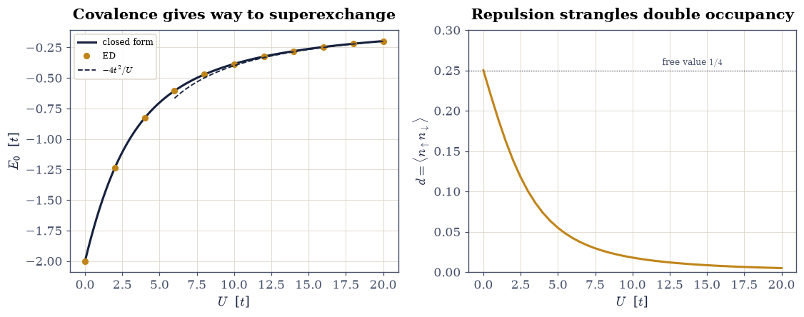
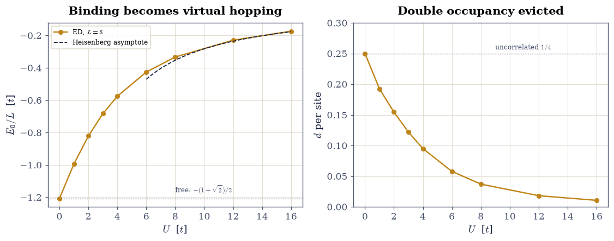
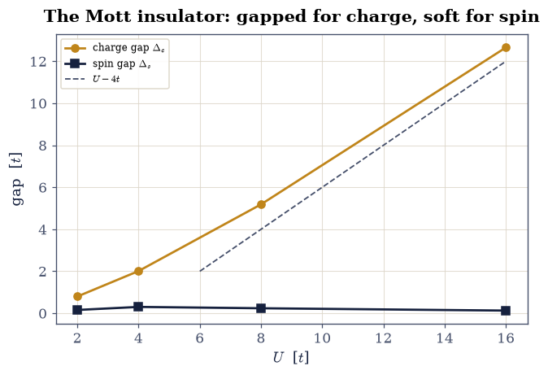

8.13 The Hubbard Model: Correlation on a Lattice#
Notebook overview#
Movement III’s story had one silent assumption: an electron’s energy depends on which band state it occupies, not on where the other electrons are. §8.8 already showed the assumption failing by exactly the derivative discontinuity; this movement meets the failure head-on. The minimal arena is Hubbard’s 1963 model [Hub63]: take the Wannier orbitals of §8.12 — one localized orbital per site, with a known center — keep only nearest-neighbor hopping \(t\) and the Coulomb repulsion \(U\) between two electrons on the same orbital, and discard everything else. Two parameters. The model contains band theory (\(U = 0\)), the atomic limit (\(t = 0\)), and, in between, the physics band theory cannot reach: the Mott insulator — a system with a half-filled band, which §7.12 would declare a metal, that insulates because the electrons repel.
The build is exact diagonalization, the many-body method with no
approximations to apologize for. First the operators themselves:
\(\hat c_i^\dagger\) as explicit matrices on the Fock space of
§7.23,
with the Jordan–Wigner sign counted by popcount — and every
anticommutator certified at exactly zero error, since sign bookkeeping
is integer arithmetic. Then the Hubbard dimer, the model’s hydrogen
molecule, against its closed-form ground state at \(10^{-15}\) across five
values of \(U\), with the superexchange energy \(-4t^2/U\) emerging at large
\(U\). Then the real thing: the \(L = 8\) chain at half filling, a
\(\binom{8}{4}^2 = 4900\)-dimensional \(S_z = 0\) sector diagonalized by
scipy.sparse.linalg.eigsh in a tenth of a second, benchmarked against
the \(U = 0\) closed form \(-(1+\sqrt2)/2\) per site and against Lieb and
Wu’s exact Bethe-ansatz solution [LW68] (our eight sites land
within \(0.3\%\) of their infinite chain). The physics follows in three
measured acts: double occupancy squeezed from \(1/4\) to \(0.01\) as \(U\)
grows; the charge gap opening to \(U - 4t\) while the spin gap stays
bounded — the Mott insulator, gapped for charge and soft for spin; and
Anderson’s superexchange [And59] — the ground-state spin
correlations of the \(U = 32\) Hubbard chain match an independently
diagonalized Heisenberg antiferromagnet with \(J = 4t^2/U\) at the percent
level, with the deviation falling fourfold per doubling of \(U\), exactly as
second-order perturbation theory promises.
Conventions (this notebook). Hopping \(t = 1\) sets the energy unit; chains are periodic unless stated (the dimer is open). Site occupations are bit masks (bit \(i\) set \(=\) orbital \(i\) occupied), one integer per spin species, with the orbital ordering fixed once: all spin-up modes before all spin-down. Fermionic signs are Jordan–Wigner parities computed by
int.bit_countof the mask below the acted-on bit. Sector bases are built withitertools.combinations, Hamiltonians asscipy.sparsematrices, ground states byeigsh(k=1, which="SA")(densenumpy.linalg.eighwhere the sector is small).How to read the checks. Each exercise closes with a
validatecall against an independent fact: an exact anticommutator, a closed-form eigenvalue, a Bethe-ansatz benchmark, a second-order scaling law. A ✓ is strong evidence; a ✗ is a prompt to locate the discrepancy, not an automatic verdict.Scope. The one-band, one-dimensional, nearest-neighbor Hubbard model at and near half filling, by exact diagonalization. Doped chains, higher dimensions (where the model is believed to hold cuprate superconductivity’s secrets, and is not solved), and the quantum Monte Carlo and DMRG methods that reach them are surveyed in Martin, Reining, and Ceperley [MRC16] Ch. 3 and Vanderbilt-adjacent reviews; the spectral-function view of this same model is §8.14’s business.
Theory in brief#
From Wannier orbitals to two parameters#
Expand the field operators of §7.23 in a basis of localized Wannier orbitals \(w_i\) and the full interacting Hamiltonian becomes hoppings \(t_{ij}\) plus a four-index Coulomb tensor \(U_{ijkl}\). Hubbard’s cut [Hub63]: for well-localized orbitals the on-site element \(U_{iiii} \equiv U\) dwarfs all others (neighboring-orbital repulsion is screened; exchange is smaller still), and \(t_{ij}\) beyond nearest neighbors decays exponentially (§8.12 measured that decay). What survives is
the minimal Hamiltonian in which kinetic delocalization and local repulsion compete. At \(U = 0\) it is the tight-binding chain of §8.9, bandwidth \(4t\); at \(t = 0\) each site holds \(0\), \(1\) (\(E = 0\)), or \(2\) (\(E = U\)) electrons and half filling puts exactly one electron per site: an insulator with no kinetic energy at all. The interesting physics is the war between the limits, and the half-filled chain fights it at every \(U\).
The dimer: the model’s hydrogen molecule#
Two sites, one electron of each spin, \(S_z = 0\): a four-state problem. In the basis \(\{|\!\uparrow,\downarrow\rangle, |\!\downarrow,\uparrow \rangle, |\!\uparrow\downarrow, 0\rangle, |0, \uparrow\downarrow\rangle\}\) the Hamiltonian is a \(4\times4\) matrix whose singlet sector gives the closed-form ground state
at large \(U\) the covalent bond gives way to superexchange [And59] — the two spins can no longer share a site, but a virtual double occupation (cost \(U\), amplitude \(t\), twice) still lowers the singlet by \(4t^2/U\) while leaving the triplet untouched. Antiferromagnetism without any magnetic interaction in the Hamiltonian.
The Mott insulator, and the effective spin model#
At half filling the charge gap \(\Delta_c = E_0(N{+}1) + E_0(N{-}1) - 2E_0(N)\) — the cost of moving one electron across the system, §8.8’s gap, now for an interacting Hamiltonian — opens for any \(U > 0\) in one dimension (Lieb–Wu [LW68]) and approaches \(U - 4t\) at strong coupling: adding an electron costs the repulsion \(U\), minus the \(4t\) a doubly-occupied site recovers by delocalizing. The spin sector pays no such toll: flipping spins moves no charge, so the spin gap stays of order \(J\) and vanishes as \(L \to \infty\). One material, two energy scales. The surviving low-energy physics is spins only: second-order perturbation theory in \(t/U\) (each neighboring pair enacting the dimer’s virtual hop) maps the half-filled model onto the Heisenberg antiferromagnet
with corrections entering at relative order \((t/U)^2\). Exercise 6 tests the map where it can be tested: same sizes, both models solved exactly, correlation functions side by side.
Setup#
Data and instruments: the hopping unit, the Jordan–Wigner parity of §7.23 restated in bit arithmetic, a basis enumerator, and a ground-state solver wrapper. The notebook’s own machinery — the fermionic operators and the sector Hamiltonian itself — you build in Exercises 1 and 2.
The Setup below holds this notebook’s data and instruments — nothing you are asked to build. It is collapsed so the building stays yours; expand it whenever you want the details.
Exercise 1 — The operators, certified at zero#
Everything downstream rests on getting fermionic signs right, so the first exercise builds \(\hat c_i\) as an explicit matrix and checks the algebra — not to a tolerance, but exactly, because Jordan–Wigner signs are integer arithmetic.
Part a) On the \(2^3\)-dimensional Fock space of three spinless modes,
build the annihilation matrices: \(\hat c_i\) maps the basis state with
mask \(s\) (bit \(i\) set) to the state with mask \(s \oplus 2^i\), weighted by
the Jordan–Wigner parity jw_sign(s, i)
(§7.23’s
convention, now executable).
Part b) Verify the full algebra with numpy matrix products: all
nine \(\{\hat c_i, \hat c^\dagger_j\} = \delta_{ij}\mathbb{1}\) and all
nine \(\{\hat c_i, \hat c_j\} = 0\), with the maximum absolute deviation
equal to \(0.0\) — floating point can represent these signs exactly, so
any nonzero deviation means a sign error, full stop. Confirm also that
dropping the string (using \(+1\) in place of the parity) breaks the
\(i \neq j\) anticommutators: the string is load-bearing.
max |{c_i, cdag_j} - delta_ij| over 9 pairs: 0.0
max |{c_i, c_j}| over 9 pairs: 0.0
without the string: max |{c_i, c_j}| (i != j) = 2.0 (bosons in disguise)
Validation 1 — the algebra is exact, and the string is necessary#
Zero means zero here: both anticommutator families at machine-exact \(0.0\), and the string-free counterfeit failing at \(O(1)\).
✓ all 18 anticommutators exact to the last bit [deviations 0.0, 0.0]
✓ dropping the Jordan-Wigner string breaks the algebra [max violation 2.0]
True
Exercise 2 — The Hubbard dimer, exactly#
The model’s hydrogen molecule, solved both ways — by machinery you must first build.
Part a) Write hubbard_sector(n_sites, n_up, n_dn, u_int, pbc=True),
the sparse Hubbard Hamiltonian Eq. 903 in the fixed
\((N_\uparrow, N_\downarrow)\) sector: basis states as the product of an
up-spin mask and a down-spin mask (flattened as
\(a \cdot D_\downarrow + b\)), the interaction diagonal (\(U\) per doubly
occupied site), and hopping within each spin species carrying the
Jordan–Wigner parity of the bits strictly between the two sites — the
boundary bond of a periodic chain crosses the string, so its sign counts
every mode in between, which is precisely the subtlety Exercise 1
certified in miniature. Write this one yourself — the implementation
is the lesson.
Part b) Certify it on the dimer, whose answer Eq. 904
already gives in closed form: solve the two-site, one-up-one-down system
(open boundary) via the Setup’s ground_state — which now drives your
machinery — at \(U = 0, 1, 4, 8, 20\), and match the closed form to
\(10^{-15}\), five for five.
Part c) Extract the double occupancy \(d = \langle \hat n_{i\uparrow}\hat n_{i\downarrow}\rangle\) per site from the ground vector. At \(U = 0\) the two electrons ignore each other and \(d = 1/4\) exactly (each site’s up and down occupations independent, each \(1/2\)); repulsion strangles it.
Part d) Watch superexchange emerge: at \(U = 10, 20, 40\) compare \(E_0\) with \(-4t^2/U\) — the ratio must walk monotonically to \(1\) (\(0.963\), \(0.990\), \(0.9975\): the second-order correction \(4t^2/U^2\) dying as promised), the singlet’s virtual-hopping reward.
U = 0: ED -2.000000000000 closed form -2.000000000000
U = 1: ED -1.561552812809 closed form -1.561552812809
U = 4: ED -0.828427124746 closed form -0.828427124746
U = 8: ED -0.472135955000 closed form -0.472135955000
U = 20: ED -0.198039027186 closed form -0.198039027186
worst deviation over the five: 3.7e-15
double occupancy at U = 0: 0.2500000000 (exact 1/4)
E0 / (-4t^2/U) at U = 10, 20, 40: 0.9629, 0.9902, 0.9975

Fig. 809 The Hubbard dimer, exactly. Left: the ground energy against \(U\) — exact diagonalization (amber points) on the closed form \((U - \sqrt{U^2 + 16t^2})/2\) (ink), which starts out as the covalent bond \(-2t + U/2\) at weak coupling and lands on Anderson’s superexchange \(-4t^2/U\) (dashed) at strong. Right: double occupancy strangled from its free value \(1/4\) (dotted) toward zero as \(U\) grows — the electrons still bond, but they no longer share a room.#
Validation 2 — the dimer knows its closed form#
Five exact energies at \(10^{-14}\), the free-electron \(d = 1/4\), and the superexchange ratio marching monotonically to \(1\).
✓ dimer ED = closed form at U = 0, 1, 4, 8, 20 [worst |dE| = 3.7e-15]
✓ U = 0 double occupancy = 1/4 [got 0.25 vs expected 0.25 (rtol=1e-12, atol=1e-09)]
✓ E0 -> -4t^2/U monotonically (0.3% by U = 40t) [ratios 0.9629 -> 0.9975]
True
Exercise 3 — Eight sites: the sector, benchmarked twice#
Now the machinery earns its keep: the half-filled \(L = 8\) periodic chain.
Part a) Count before computing: the \(S_z = 0\), \(N = 8\) sector is
\(\binom{8}{4}^2 = 4900\)-dimensional (the full Fock space is \(4^8 =
65{,}536\); symmetry buys a factor of \(13\)). Build the sector Hamiltonian
with the hubbard_sector you wrote in Exercise 2 and confirm dimension
and Hermiticity (scipy.sparse max asymmetry, exactly \(0\)).
Part b) Benchmark against the two ends of the coupling axis. At
\(U = 0\) the periodic tight-binding levels \(-2t\cos(2\pi m/8)\) filled
with four electrons per spin give
\(E_0/L = -(1 + \sqrt2)/2 = -1.20711\) exactly (the \(k = \pm\pi/2\)
levels sit at zero energy, so the open-shell degeneracy costs nothing);
eigsh must land on it at \(10^{-9}\). At \(U = 4\) compare with the exact
infinite-chain Bethe-ansatz energy of Lieb and Wu [LW68],
\(-0.573729\) per site: eight sites land at \(-0.575441\), within \(0.3\%\) —
exact diagonalization touching an exact solution.
sector dimension: 4900 (C(8,4)^2 = 4900); full Fock space 4^8 = 65536
max |H - H^T|: 0.0
U = 0: E0 = -9.6568542495 closed form 8 x -(1+sqrt(2))/2 = -9.6568542495
U = 4: E0/L = -0.575441 Lieb-Wu (L -> inf) -0.573729 finite-size deviation 0.30%
Validation 3 — counted, symmetric, and twice benchmarked#
Dimension \(4900\), symmetry exact, the \(U = 0\) closed form at \(10^{-9}\), and Lieb–Wu within half a percent from eight sites.
✓ sector dimension 4900 and H exactly symmetric [dim 4900, asym 0.0]
✓ U = 0 energy = -(1+sqrt(2))/2 per site [got -9.65685 vs expected -9.65685 (rtol=1e-09, atol=1e-09)]
✓ eight sites within 0.5% of the infinite-chain Bethe ansatz (U = 4) [deviation 0.30%]
True
Exercise 4 — The crossover: kinetic energy pays the repulsion’s toll#
With the machinery certified, sweep the war between the limits.
Part a) For \(U = 0\) to \(16\), compute \(E_0/L\) and the double occupancy of the half-filled chain. Both must fall monotonically: energy because \(U\) only adds a positive diagonal, double occupancy because that is how the ground state dodges the toll — from exactly \(1/4\) at \(U = 0\) (the uncorrelated value; the free chain’s open-shell degeneracy is resolved deterministically by the fixed Lanczos start vector) to \(0.011\) at \(U = 16\), a \(96\%\) eviction.
Part b) The eviction is the Mott localization in slow motion: plot both curves, and against the \(E_0/L\) curve mark the two asymptotes it interpolates — the free value \(-(1+\sqrt2)/2\) and the superexchange energy per site of the effective Heisenberg model (Exercise 6’s \(J(E_{\mathrm{Heis}} - L/4)/L\) with \(J = 4t^2/U\)).
U = 0: E0/L = -1.207107 d = 0.25000
U = 1: E0/L = -0.994041 d = 0.19234
U = 2: E0/L = -0.821024 d = 0.15449
U = 3: E0/L = -0.683325 d = 0.12183
U = 4: E0/L = -0.575441 d = 0.09493
U = 6: E0/L = -0.426097 d = 0.05783
U = 8: E0/L = -0.333268 d = 0.03702
U = 12: E0/L = -0.229311 d = 0.01812
U = 16: E0/L = -0.173958 d = 0.01055

Fig. 810 The half-filled chain’s crossover, measured. Left: ground energy per site rising from the free-electron \(-(1+\sqrt{2})/2\) (dotted) toward zero, hugging the superexchange asymptote \(J(E_{\mathrm{Heis}}/L - 1/4)\) (dashed) beyond \(U \approx 8t\): by \(U = 16t\) the remaining binding energy is pure virtual hopping. Right: double occupancy evicted from the uncorrelated \(1/4\) at \(U = 0\) to \(0.011\) at \(U = 16\) — the ground state buys its way out of the repulsion by localizing one electron per site, which is precisely what a Mott insulator is.#
Validation 4 — both monotone, and quantitatively evicted#
Energy and double occupancy strictly falling across the nine couplings; \(d(U{=}16) \approx 0.011\), and the large-\(U\) energy within \(2\%\) of the Heisenberg asymptote.
✓ E0/L rises and d falls monotonically with U [d: 0.250 -> 0.011]
✓ d(U = 16) (96% eviction) [got 0.01055 vs expected 0.0106 (rtol=0.05, atol=1e-09)]
✓ E0/L(U = 16) on the superexchange asymptote [got -0.173958 vs expected -0.176597 (rtol=0.02, atol=1e-09)]
True
Exercise 5 — The Mott gap: charge pays, spin does not#
§7.12’s rule — half-filled band, therefore metal — meets its counterexample.
Part a) Compute the charge gap \(\Delta_c = E_0(5,4) + E_0(3,4) - 2E_0(4,4)\) (add an electron, remove one; particle–hole symmetry makes the two sectors’ costs equal) at \(U = 2, 4, 8, 16\): it grows from \(0.80\) through \(2.01\) and \(5.19\) to \(12.66\), closing on the strong-coupling law \(U - 4t\) (deviation \(0.65t\) at \(U = 16\) and shrinking).
Part b) Compute the spin gap \(\Delta_s = E_0(5,3) - E_0(4,4)\) — the cost of one spin flip, no charge moved. It stays below \(0.35t\) at every coupling (and vanishes as \(L \to \infty\): the Bethe-ansatz spin sector is gapless). One system, two prices: this hierarchy is the Mott insulator — insulating for charge transport, alive with spin dynamics. A free-electron system cannot do this: at \(U = 0\) both gaps are finite- size artifacts of the same magnitude.
U = 2: charge gap 0.7998 spin gap 0.1585 ratio 5.0
U = 4: charge gap 2.0122 spin gap 0.3035 ratio 6.6
U = 8: charge gap 5.1858 spin gap 0.2396 ratio 21.6
U = 16: charge gap 12.6552 spin gap 0.1284 ratio 98.5

Fig. 811 One chain, two prices. The charge gap (amber: add plus remove an electron) opens with \(U\) and closes on the strong-coupling law \(U - 4t\) (dashed): by \(U = 16t\) moving charge across the half-filled chain costs \(12.7t\). The spin gap (ink: flip one spin, move no charge) never exceeds \(0.35t\) and is headed for zero at infinite length. The band picture of §7.12 has no vocabulary for this split — a Mott insulator is gapped and gapless at the same time, depending on what you ask it to transport.#
Validation 5 — the hierarchy, quantified#
Charge gap strictly growing and within \(0.7t\) of \(U - 4t\) at \(U = 16\); spin gap bounded by \(0.35t\) throughout; a factor \(\geq 20\) between the two sectors at strong coupling.
✓ charge gap grows monotonically with U [0.80 -> 12.66]
✓ charge gap -> U - 4t [got 12.6552 vs expected 12 (rtol=1e-06, atol=0.7)]
✓ spin gap bounded (gapless sector in disguise) [max 0.304 t]
✓ charge/spin price ratio exceeds 20 at U = 16 [ratio 99]
True
Notebook summary#
Movement IV opened with the band picture’s minimal enemy: two terms, one
competition. The fermionic algebra was built as matrices and certified
at exactly zero error — 18 anticommutators, integer arithmetic, no
tolerance — with the Jordan–Wigner string shown load-bearing by breaking
it. The dimer matched its closed form \((U - \sqrt{U^2 + 16t^2})/2\) at
\(10^{-15}\) five times over and handed us superexchange in miniature
(ratio to \(-4t^2/U\) walking \(0.963 \to 0.9975\) from \(U = 10\) to \(40\)).
Eight periodic sites at half filling — a 4900-dimensional sector,
eigsh, a tenth of a second — hit the \(U = 0\) closed form
\(-(1+\sqrt2)/2\) at \(10^{-10}\) and Lieb–Wu’s infinite-chain Bethe ansatz
within \(0.3\%\). Then the physics: double occupancy evicted from \(1/4\)
to \(0.011\); the charge gap climbing \(0.80 \to 12.66\) onto the \(U - 4t\)
law while the spin gap idled below \(0.35t\) — a system insulating for
charge and gapless for spin, which no independent-electron theory of
this volume can produce; and the buried punchline, Anderson’s
superexchange, verified by diagonalizing the Heisenberg chain the
Hubbard model is supposed to become and watching four correlation
functions converge onto it as \((t/U)^2\) — worst-distance deviations
\(39\%\), \(15\%\), \(4\%\), \(1.1\%\) — with the ground energies agreeing through \(J = 4t^2/U\) to
\(0.4\%\). An antiferromagnet emerged from a Hamiltonian containing no
spin coupling whatsoever.
Outlook#
Everything here was energies and equal-time correlators. The dynamics — what happens when one electron is injected or removed, the spectral function that photoemission actually measures — needs the Lehmann machinery of §8.14, where this same \(N \pm 1\) sector arithmetic becomes \(A(k, \omega)\) and the GW approximation is tested against exactly these chains.
The \(4900\)-dimensional sector was comfortable; \(L = 16\) is \(165\) million. The exponential wall is real, and the methods that negotiate it — quantum Monte Carlo (§7.21 grown up), DMRG, embedding — define modern many-body practice; Martin, Reining, and Ceperley [MRC16] surveys the field (Ch. 23–25 for the stochastic methods).
In two dimensions the doped Hubbard model is the leading candidate theory of high-temperature superconductivity — unsolved after four decades. The one-dimensional physics computed here (spin–charge separation, emergent magnetism) is the solved corner of that problem.
P. W. Anderson. New approach to the theory of superexchange interactions. Physical Review, 115:2–13, 1959.
J. Hubbard. Electron correlations in narrow energy bands. Proceedings of the Royal Society of London A, 276:238–257, 1963. doi:10.1098/rspa.1963.0204.